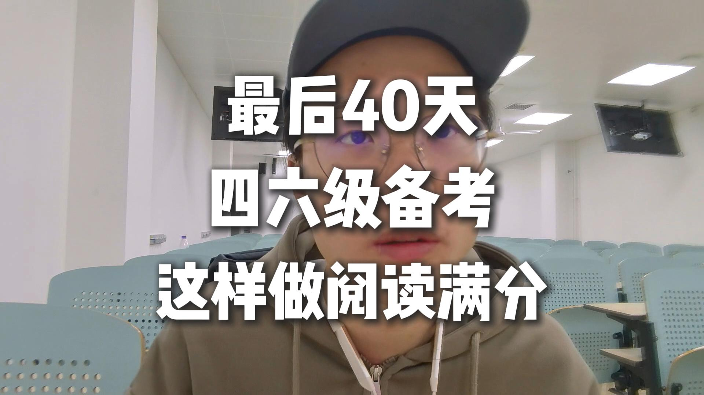
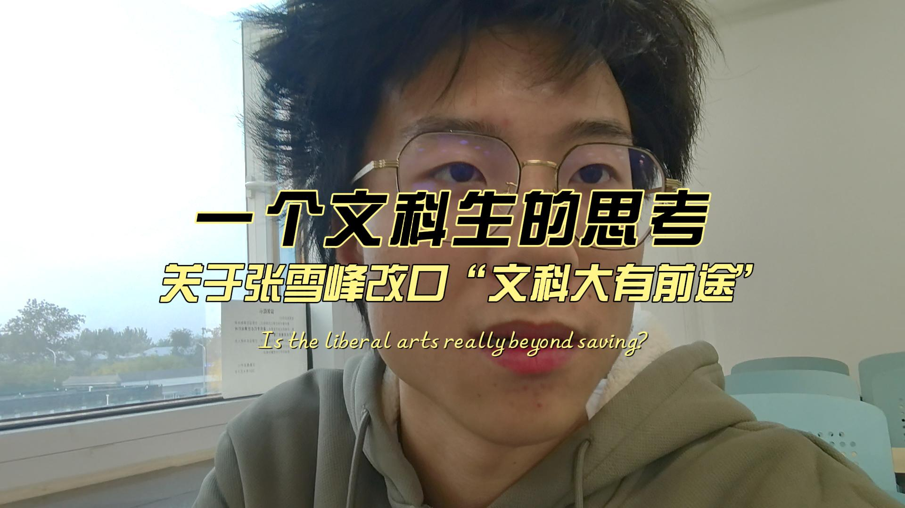
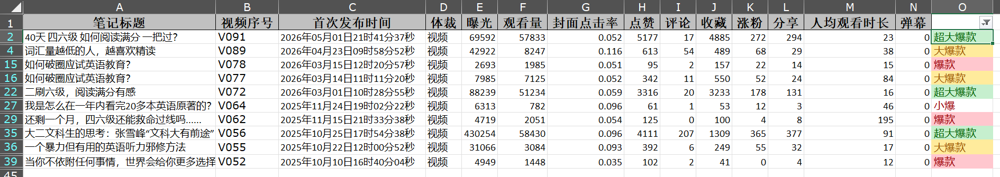
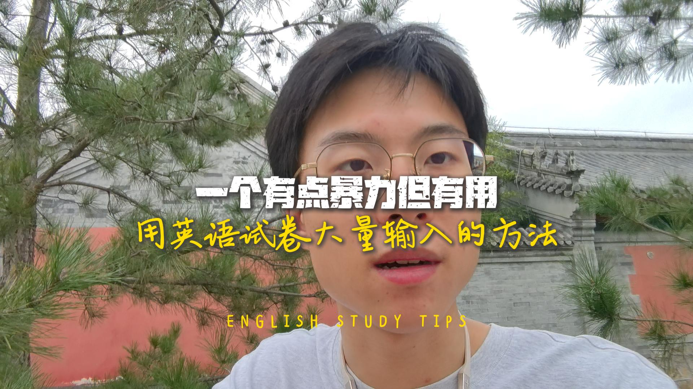

Content Experiments
记录选题、爆款、冷启动、复盘和账号增长。这里放最真实的作品证据。

这个项目现在是网站里最重要的证据。它能说明我不是只会讲概念，而是已经经历过选题、发布、反馈、复盘和增长这条链路。
记录选题、爆款、冷启动、复盘和账号增长。这里放最真实的作品证据。
不是空谈商业感，而是写我如何看用户、流量、产品和变现可能。
把 AI 当成生产工具，记录我如何用它做内容、网站、学习和项目。
艺术和音乐先作为侧线出现，等成果变厚后再升级成独立板块。

作为主案例入口，讲清楚这个作品为什么被看见、为什么被收藏。

用平台反馈补足“我做过”的可信度。

AI、商业、音乐，只有真的做出来才往前台放。
现在不需要把自己写成成熟品牌，也不用强行喊合作。这个网站先完成一件事：让对的人记住我，并且觉得值得聊。